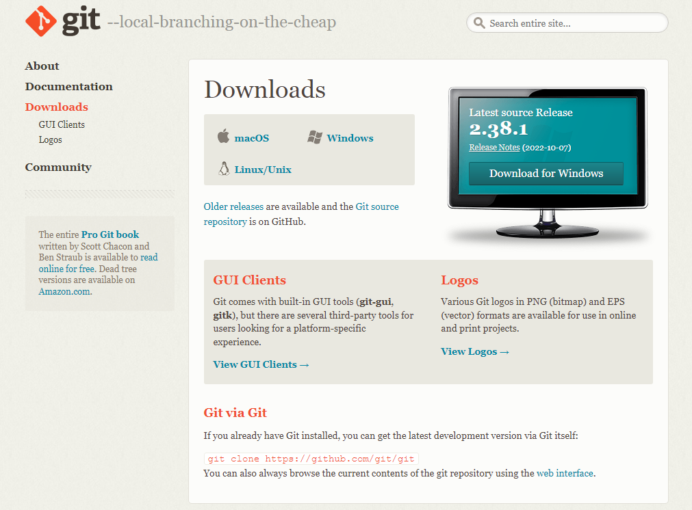

Getting Started
1.
The First Thing That You Nedd is to download Git. For downloading Git goto:
Download
After Clicking on Download This Page is Open

2.
Now you will need a github account to keep and track your Files. For that goto
Github And create your account. If you already have a account just login.
After Login
Now you will need a repository to store your files.